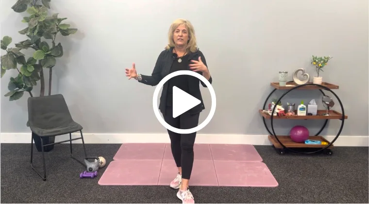

Many people with chronic constipation don't need more fiber. They need muscles that know how to let go. Learn the pelvic floor approach Sheree uses in her clinic, so you can empty more completely, strain less, and stop planning your day around the bathroom.
Get Instant Access — $249If any of these sound like you, the problem may not be what you're eating. It may be how your pelvic floor is working.
Fiber and water change what's inside the bowel. They can't teach a tight, uncoordinated pelvic floor how to release.
These are the patterns Sheree sees in her clinic over and over, and none of them can be fixed with diet alone.
Your internal sphincter senses when the rectum is full. Your external sphincter has to relax all the way for stool to pass. When they stop working together, the signal fades. Every time you ignore the urge, stool moves back up, dries out, and gets harder to pass.
The external anal sphincter has three layers, connected to the perineal body, the sacrum, and the pubic bone. If the back half of your pelvic floor or your inner thighs are tight, the sphincter can't fully open, no matter how hard you push.
Your tailbone and pelvis have to move to open the path out. A tailbone caught forward after labor or a fall, or a puborectalis muscle that won't lengthen, keeps that path kinked.
Bowel release happens in "rest and digest." Stress, rushing, and pain keep your body in fight-or-flight, and the pelvic floor is one of the first places that tension shows up.
“It's really crazy when you think about how mechanical having a bowel movement is every day, but I just want you to know it's possible to reset this system.” — Sheree DiBiase, PT, in the course
More than 4 hours of teaching, from how your bowel really works to a home program you can follow step by step.

Why constipation is a whole-body problem: fluid, fiber, fitness, nerves, and mood. Then a standing and all-fours session that trains the anal sphincter while the pelvic floor is stretched, plus lymphatic drainage for bloating.
What a healthy stool looks like, why a tight back half of the pelvic floor means a tight sphincter, and how its three rings attach to the perineum, sacrum, and pubic bone.
Breathing and seated and standing movements that let your tailbone move out of the way, ending with sphincter holds in a stretched position.
How to read your stool type, track what's really driving your constipation, and build a daily routine that brings a lost urge back.
Why your inner and outer sphincters need to be “best friends,” and exactly how to sit, lean, breathe, and schedule so you stop bearing down.
A lying-down session to release your pelvic floor, hips, and trunk, plus the jaw–gut connection and eye-tracking to calm your nervous system.
Using silicone cups along the path of your colon, always starting in the lower-left belly.
How to use a home TENS/NMES unit with crisscrossed belly pads, and who shouldn't use one.
How to find the valve between your small and large intestine and reset it with a gentle, rhythmic touch.
Why you clear the lower-left colon first, then the full “I Love You” massage with skin-drag strokes.
How your feet, arches, calves, and walking pattern load your pelvic floor, with arch and calf work you can do while brushing your teeth.
Strengthening the side hip and rotator muscles so your pelvic floor and sphincter stop overworking. Yes, this is where “butt gripping” gets fixed.
By the end of the course, you'll understand what's happening in your body and have a routine you can follow every day.
Get the same approach Sheree uses with her constipation patients, available at home whenever you need it.
Enroll Now — $249Pelvic Floor Specialist — 40+ Years Clinical Experience
Sheree is the founder of Lake City Physical Therapy, the creator of the Pelvic Floor Pro app, and a former professor at Loma Linda University. For four decades she has treated the problems most people are too embarrassed to bring up, bowel trouble included.
This course walks you through what she teaches her constipation patients in the clinic: the anatomy, the toilet routine, the sphincter retraining, and the hands-on belly techniques.
Self-paced video course • Lifetime access
One-time payment. No subscription.
For context, a single hour-long visit with a pelvic floor specialist often costs $250 or more. For less than that one visit, this course gives you 4+ hours of Sheree's expertise to come back to whenever you need it.
More fiber and harder pushing haven't worked. Learn how your pelvic floor really works and start retraining it today.
Get Instant Access — $249